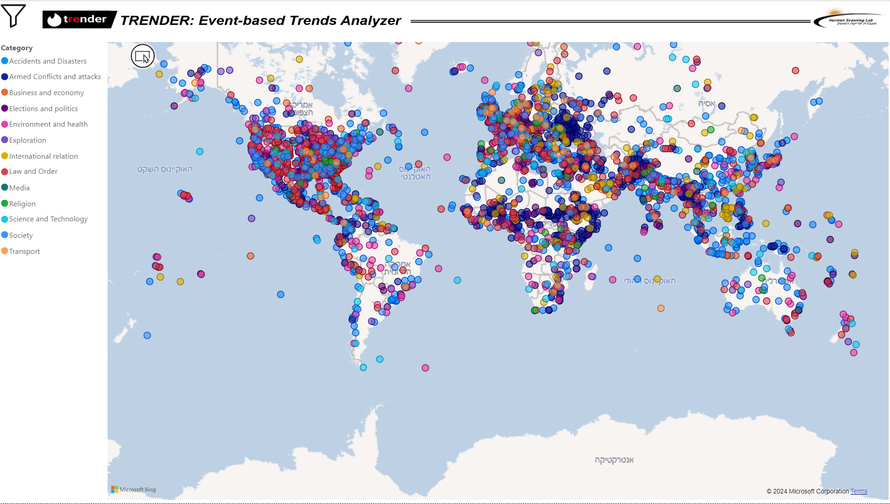

Map View: Geographic Visualization of Events

The Map View in Trender provides a geographic display of the events, allowing users to select specific regions and observe the concentration and spread of events across different locations. This is a powerful tool to visualize how events are distributed globally or in specific areas of interest.
Key Features
- Interactive Map: Select specific regions to focus on events happening within that geographical boundary.
- Heatmap: View concentrations of events to easily identify hotspots of activity.
- Zoom & Pan: Navigate the map to examine regions in more detail.
Use Cases
- Crisis Monitoring: Track the geographical spread of a humanitarian crisis or conflict and identify the regions most affected.
- Regional News Focus: Filter events to focus on a specific continent, region, or country, gaining insights into local trends.
Example
If you want to analyze where most armed conflicts occurred in 2023, you can use the Map View to visualize the concentration of events across the globe, and zoom in on specific regions such as the Middle East or Sub-Saharan Africa for a more detailed view.